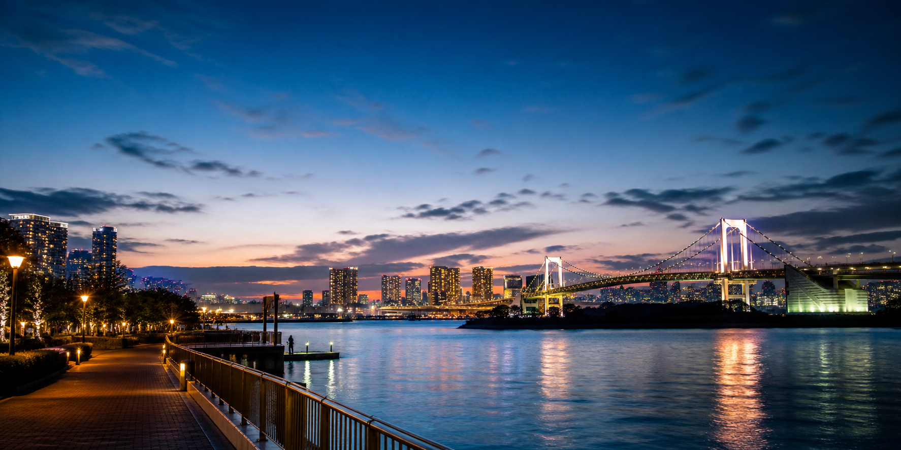

DAY 01 · 8/16 SUNDAY
龜有、台場
與新宿
落地後先以輕量散策暖身，從下町動漫街景移動至東京灣，最後用新宿夜景收尾。
ROUTE
移動動線
SKYLINER
成田機場 → 京成上野
抵達後先到飯店放行李。
上野東照宮
唐門正面與石燈籠參道，控制為短停留。
東京 Metro＋JR 常磐線
根津／西日暮里 → 龜有
出站後先北口，再走南口銅像群。
龜有銅像 → 午餐 → 香取神社
北口兩津像、南口祭典像、商店街與 Ario 串成步行圈。
JR＋臨海線／百合海鷗
龜有 → 台場
先商場與鋼彈，再向海濱公園移動。
台場海濱公園 → 彩虹大橋
自由女神像平台及 Decks 海側露台適合日落。
台場 → 新宿東口 → 歌舞伎町 → 上野
BicCamera、紀伊國屋、新宿 Subnade、歌舞伎町一番街、哥吉拉、東急歌舞伎町塔與回憶橫丁依序步行；夜景拍完直接回飯店。